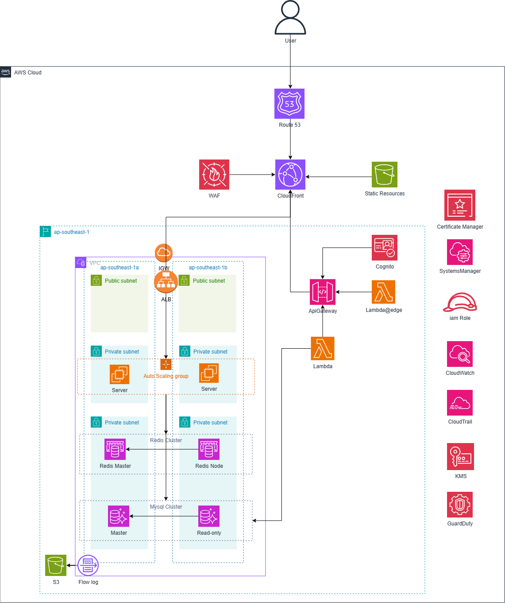

武汉柏锐科技有限公司 | 游戏平台
1. 项目背景
武汉柏锐科技有限公司是一家中小型创新型企业，现有员工约50人，年营业额约200万美元。自成立以来，公司专注于技术研发与产品创新，业务涵盖多个方向，其中游戏平台是公司重点发展的板块之一。
该游戏平台致力于构建一个公平、透明、安全且高效的虚拟社区。平台融合社交与娱乐元素，具备高并发处理能力，能够支持海量用户的实时匹配请求，并通过顶级安全防护保障用户数据安全无虞。同时，平台已实现国际化服务，能够为全球用户提供无缝体验，逐步在全球市场中树立知名度。
随着业务扩展，公司计划推广至新加坡市场。但测试发现新加坡用户访问国内服务器时存在明显延迟，赛事与活动时网络波动更突出。海外用户增长同时也带来更频繁的网络与 DDoS 攻击，影响系统稳定与玩家体验。为此建议采用 AWS 云技术构建弹性、稳定且安全的平台，兼顾便捷运维与持续优化。
2. 项目目标
- 降低访问延迟：在 AWS 新加坡区域部署 EC2，提升区域访问速度，业务高峰也能保持流畅。
- 增强安全性：引入 AWS Shield 与 WAF，抵御网络与 DDoS 攻击，保障数据与对战过程安全。
- 提升业务可用性：借助 ELB 与多可用区 EC2 部署，避免单点故障，确保核心服务稳定运行。
- 优化性能与成本：使用 Auto Scaling 按需伸缩 EC2 数量，并通过 Reserved Instances 等方式优化TCO。
- 持续技术支持：在 AWS 与点一云支持下，建立持续评估与改进机制，快速响应新需求。
3. 项目架构图

架构要点：多可用区 VPC、公私子网、Auto Scaling 的 EC2 应用层，Redis 集群/MySQL 主从，前置 WAF + CloudFront + Route53，监控审计与KMS密钥管理等
4. 项目成果
- 显著降低延迟：新加坡区域就近部署，访问与匹配延迟明显下降，玩家留存率提升。
- 安全性增强：WAF+Shield 自动化清洗与拦截，约 95% 常见攻击被阻断，平台声誉提升。
- 高可用保障：ELB + 多可用区 EC2 提升服务可用性至 99.9% 级别，高峰期依旧稳定。
- 性能与成本优化：Auto Scaling 高峰稳定、低谷节省成本；Reserved Instances 等手段降低支出。
- 持续改进能力：建立性能评估与安全审计机制，持续优化以适配业务扩张。